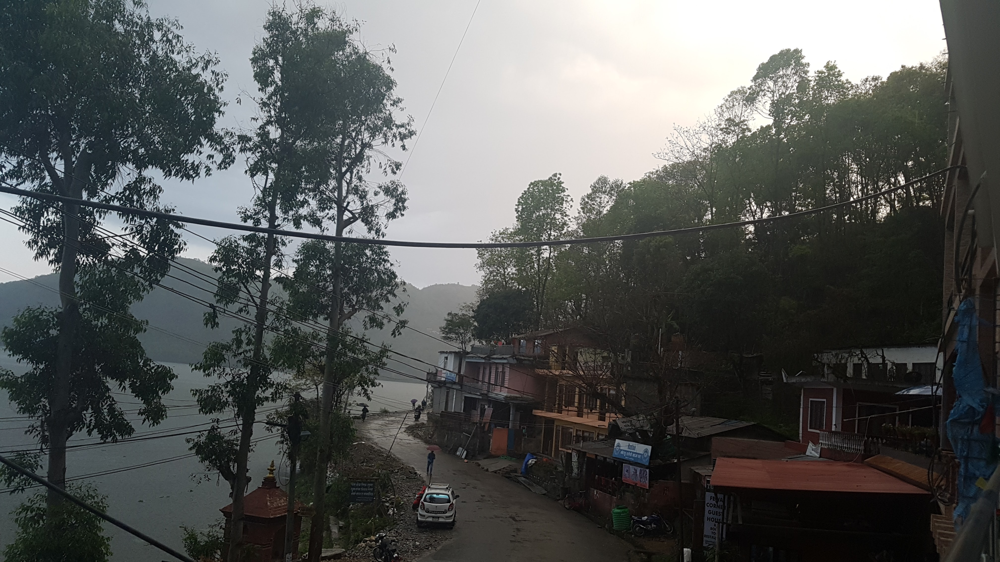

카트만두 탈출
2017년 04월 06일
여행 #3일째
카트만두 탈출
새벽에 또깼다. 6시에 일어나야되는데 한 4시즘 깬것 같다. 잠은 잘드는데 계속 일찍 깨버린다. 오늘은 특히 6시에 일어나지 않으면 안되기 때문에 그랬던것 같다. 수시로 깨서 시간을 보게된다.
오늘 드디어 카트만두를 탈출한다. 어제 이후로 장소 관계없이 보이는 모든 수도꼭지를 틀어봤다. 젠장! 이곳은 모든 수도꼭지에서 녹물이 나온다. 생각해보니 어제 묵었던 좋은 호텔에서도 물이 약간 노랬던것 같다. 조명 때문이겠거니 했는데 이제와서 보니 녹물이 맞다.
아침일찍 일어나서카트만두를 탈출 하여 공항으로 갔다. 팔짱끼고 껌을 씹으며 앉아있는 백인 남자애들 등치가 커서 그런지 위압적이다. 영어도 딸리고 하니 선듯 먼저 말걸기가 쉽지 않다. 백인애들이 내말을 못알아들으면 막 짜증낼것 같다. 지들이 뭐라고! 이자식들을 극복하고 싶다.
어제 신청한 택시를 타고 공항에 도착 했다. 일찍와서 무척 여유롭다. 항공티켓을 끊었다. 항공을 이용해 포카라로 갈때 히말라야의 엄청난 장관을 한눈에 볼 수 있다고 한다. 5C라고 적힌게 좌석번호인가? 일단 비행기 줄이 C이기 때문에 맨 끝이다 . 과연 내 자리는 좋은 자리일까? 이곳저곳 물어볼 사람을 찾아 물어봤는데 베스트 씻이라고 한다 오예!! 근데 내가 알기로는 오른쪽 좌석이 베스트인것 같은데 이 좌석은 왼쪽이라고 란다. 읭? 일단 비행기를 타보자. 고착 30분 타는 비행기인데 더 좋은 자리에 앉고 싶어 전전긍긍하고 있는 나를 발견 했다. 이곳은 네팔 아닌가? 욕망을 내려놓자.
결국 좌석은 오른쪽이었고 오른쪽이 경치가 좋은 방향이 맞았다. 하지만 구름이 많아거 그런지 산이 그렇게 멋지게 보이진 않았다.
포카라 도착. 여긴 천국!
포카라 공항에 내렸다. 카트만두와는 다른 공기질에 행복했다. 이제 어디로 가지? 두군데 숙소를 알아놨는데 윈드폴 한인 게스트하우스와 호텔 요코하마다. 예약을 안해서 묶을 수 있을까 고민하던차 생각해보니 나 핸드폰도 터지기 때문에 윈드폴에 한번 전화를 걸어봤다. 답변은 Yes 오늘 사이 많이 빠져서 숙박이 가능하다고 한다 오예! 예약없이 오기 쉽지 않은 곳인데 운이 좋았다. 한인들에 많기에 이왕 이렇게 된거 많은 정보도 얻을 수 있을 것이다.
택시 가격을 흥정했다. 흥정 스킬이 좀더 늘었다. 처음 목적지도 안말하고 내가 알아본 최저 가격부터 부른다 300루피다. 그럼 택시 기사가 알겠다고 한다. 장소는? 윈드폴근처 프리덤까페. 그랬더니 안된다고 한다 500으로 갈수았다고 한다. 그래서 나는 안됀다 350은어떠냐. 안됀다고한다. 그래서 400으로 하자고했더니 됐다.
택사타고 가사와 이런저런 이야기도 하고 같이 사진도 찍었다. 현지인과 대화는 언제나 즐겁다. 숙소에 도착했다. 도심보다 떨어져있어서 한적하고 좋았다. 숙소가 호수 바로앞에있어서 경치도 좋았다. 이동네 한적하고 너무 좋은 곳이다. 수도도 녹물이 나오지 않는다!! 나는 정말 운이 좋은경우 였다. 왜냐하면 이곳은 예약 없이 정말 오기힘든곳이기 때문이다. 게다가 방도 호수가 보이는방 (800루피) 숲쪽방향(500루피)를 고를수 있는 상황이었다. 오늘 아침에 대량의 사람들이 나갔기 때문이다. 숲방향도 조금 어두웠지만 생각보다 좋았다. 숲냄새가 많이 났다. 그래도 이왕 묶는거 호수가 보이는 테라스가 있는 방에 묶기로 했다. 언제 또 호수가 보이는 방에 묶어 보겠냐.
1층 로비에 앉아있으니 너무 한적하고 좋았다. 주인 아주머리와도 이런저런 대화도 나눴다. 근처를 한바퀴 둘러보기로 했다. 호숫가를 따라서 돌아봤다. 호수 바로 위에 나무로 오두막을 만든 음식점도 있었는데 멋졌다. 아래에 어떤 여자애들 둘이 있었는데 말걸어봤다. 대학생이고 포카라에 사는 현지인이라고 한다. 컴퓨터 사이언스 전공이라고해서 더 반가웠다.
호수 뒷편에는 산이 있는데 멋져보였다. 잠깐 산책하기 좋아보여서 올라가봤다. 다행이 길이 나있었다. 쭉 올라갔다가 반대편으로 게스트하우스 바로옆으로 내려오는 길도 있어서 훌륭햇다. 아침에 산책하면 좋을것 같았다.
다시 숙소에 도착하니 방 청소가 끝났다고 한다. 내 짐을 방에 위치 시켰다. 어제 묶었던 방보다 훨씬 싸면서도 2000배 마음에 들었다. 시설이 좋다는 말은 아니다. 분위기와 경치 모든게 완벽해 보였다. 창가가 바로 도로가 있어서 조금 시끄럽긴하지만 다른것들이 너무 좋았기때문에 괜찬았다.
이번엔 호수 주변을 둘러보기로 했다. 점심도 먹기로 했다. 오늘 아침을 대충 빵으로 때웠기 때문에 바로 먹고 싶었다. 우리나라 음식점도 있지만 현지음식 위주로 먹고 싶었다. 인도 네팔음식 향에 거부감이 별로 없는것같다. 이제는 고수향도 괜찬은것 같다. 지나가다 들른 한 식당 경치가 너무 한적하니 좋았다.
210루피짜리 인디안 아침식단을 선택했다. 푸리랑 인도식 포테이토 수프? 였다. 양은 많지 않았지만 맛있었다. 저렴하기도 하고 자주 들러야 겠다. 식당에 한 네덜란드 인이 들어와서 인사했다. 대화도 잠깐 나눴다. 백인애들 계속 두려워하지말고 최대한 기회가 있을때마다 말을 걸어봐야겠다. 내가 말을잘 못해도 어떤가? 나는 영어사용자도 아닌 외국인인데
식사를 마치고 메인로드를 조금 걸어보기로 했다. 잡화를 살만한 마트도 있는지 보고 올겸 말이다. 한곳에서 두루마리 휴지를 구매했다. 오는길에 50루피짜리(한국돈 500원) 초코 크로아상을 샀는데 맛있었다. 양도 많아서 배채우기도 좋았다. 점심을 약간 부실하게 먹었더니 무척 만족스러웠다.
여기가 천국이다. 음식값도 싸고 숙박비도 싸고 경치도 좋고 공기도 좋고 사람들도 여유롭다. 이곳에서 편하게 쉬다가 안나푸르나 트레킹을 시작 해야겠다. 그동안 여행 계획도 조금 더 마치고 트레킹 공부도하고 준비물도 구입하고 해야겠다.
돌아와서 지금까지 일기를 모두 쓰니 아직도 2시20분밖에 안됐다. 일찍 일어난것도 있지만 오늘 시간 참 길어서 행복하다. 낮잠이나 한숨 자야겠다. 그동안 잠을 많이 못잤으니.
그러나 잠에 들지 못했다. Wikitravel이라는 사이트에서 포카라 도시 정보에대한 글을 쭉 읽었다. 문자로만 되어있어 인터넷이 어려운 여행중 정보를 얻기 좋다. http://wikitravel.org/en/Pokhara 앞으로 가는 도시마다 이렇게 글을 한번씩 읽어야 겠다. 생각보다 읽을만 하고 영어공부도 되고 좋다. 그리고 노트북을 켜고 이것저것 작업을 시작해야겠다. 블로그도 여행 가기 전날까지 업로드를 마쳐야겠다.  평화로운 포카라 레이크사이드
여행자들과의 대화
저녁을 먹고 숙소로 돌아왔다. 돌아오는 길에 망고를 사왔다. 망고도 가격흥정을 통해 10루피를 깎아서 100루피에 사와서 뿌듯했다. 윈드폴 게스트하우스에 묶고 있는 사람들을 만났다. 망고도 나눠 먹었다. 오랫동안 묶어서 서로 모두 친해보였다. 나도 곧 그렇게 되겠지.
이 게스트하우스에는 정말 많은 한국인 세계 여행자들이 있었다. 한 부부는 2년 세계여행 계획 이라고 한다.(TT부부) 또 한명은 3년 세계여행 계획이라고 한다. 모두 시작한지는 3~4개월정도 되었다. 공통된 특징은 특별한 계획이 없다는것이다. 여기서 무척 큰 위안을 받았다. 사람마다 본인이 선호하는 여행 스타일이 있다. 나는 죽어도 철저한 계획은 못하는 스타일이다. 그런데 여기서 만난 이 여행 전문가들도 나와 같은 성향의 무계획 여행자들이었다.
3년 세계여행을 계획중인 분을(이름은 Y) 통해 안나푸르나 트래킹에 대한 정보를 많이 얻을 수 있었다. 이 사람은 안나푸르나 라운딩(써킷) 트레킹을 포터없이 혼자 했다고 한다. 약 12kg정도 되는 짐을 직접 들고 말이다. 대단하다. ㄷ 근데 막상 해보면 누구나 다 할수 있는 트래킹이 구나라고 생각하게 된다고 한다. 이런 느낌 어떤건지 잘 알것같다. 인간의 도전을 가로막는 막연한 두려움이다. 나도 해볼까 하는 생각이 든다. 막상 도전해보면 될것 같기도 하다. 도전욕구가 막 생긴다.
알고보니 이친구는 나와 나이가 비슷한 또래였다. 같은 학번. 그래서 서로 말을 편하게 하기로 했다. 나는 우리나라의 정해진 길 밖에없는 틀에밖힌 인생을 살고 싶지 않다고 말했다. 모두 한 목적지만 향해 달려가는 그 삶에 너무 실증을 느꼈다고 말했다. 당신도 그런삶을 원하는것 같다고 말했다. 하지만 놀랍게도 다른 답변을 들었다. 이 친구는 혹시나 3년뒤에 그런 정형화된 삶으로 돌아간다고 해도 행복할 수 있을것 같다는것이다. 그렇다. 정형화된 삶이든 일반적이지 않은 삶이든 그것은 내가 처할 환경에 불과하다. 어떤 환경이든지 간에 행복을 느끼면 되는 것이다. 놀라운 답변이었다. 내가 가졌던 1차원적인 생각을 뛰어넘는 것이었다.
이 친구는 인도 명상센터에서 이런것들을 많이 생각하게 되었다고 한다. 인도에 10일 코스로 명상 수련을 할 수 있는 센터가 있는데 거기서 수련했다고 한다. (그전에는 1개월 요가를 수료했다고 함) 그곳은 휴대폰부터 모든 소지품을 반납하고 10일동안 명상하고 밥먹고 잠만 잔다고 한다. 몸의 감각에 집중하는 훈련을 통해 과거의 고통과 미래의 불안을 떨쳐내고 현재에 충실하는 삶을 경험 할 수 있다고 한다.
명상도중 과거에 있었던 온갖 괴로운 기억들이 떠오르고 불안한 미래가 연상되어 무척 고통스럽다고 한다. 하지만 그것들을 모두 객관적으로 바라볼 수 있는 훈련이 된다고 한다. 이런 생각들 모두 잠깐 머무렀다. 지나가는것이구나 하고말이다.
그 명상센터 이름은 위빠싸나 명상센터다 (Vipassana meditation) 전세계 곳곳에 있으며 인도에는 약 6개정도가 있다고 한다. 부처의 가르침에 기반하지만 딱히 불교와는 관련없다고 한다. 이친구는 이 경험을 통해 인생의 가치관이 송두리째 바뀌었다고 한다.
나도 그 경험을 하고 싶어졌다. 인도에서 할 수 있는 정말 특별한 경험이 될것 같았다. 어떤 깨달음을 얻고 싶다. 그것은 내가 가진 고통에서 자유로워지는 것일 것이다.
곧 윈드폴 게스트하우스 주인아저씨까지 와서 같이 명상에대한 주제로 대화를 이어나갔는데 그 수준이 한국에서 사람들과 경험했던 대화랑은 차원이 다른 대화였다. 더 높은 레벨이라는 의미라기 보다는 인간계가 아닌 다른 차원의 세계에서 살고있는 사람들 같았다.
도데체 여행이 무엇이길래 이들처럼 한 사람의 인생을 송두리째 바꿔놓기도 하고 인간계가 아닌 다른 세계에 발을 들여놓게도 하는걸까. 그것이 궁금해 졌다. 나도 여행이라는 세계에 진짜 발을 담가보고 싶어졌다.
그것은 경이로움이다. 경이로움은 현재에 완벽하게 동화 될 때 얻을 수 있는 것이라고 한다. 가령 숲속을 걸을때 풀벌레 소리와 나무의 냄새와 내 몸에서 나는 땀과 호흡이 그 순간에 동일하게 존재하는것을 느끼는것. 그런 경이로움을 경험하는것이 인간들이 모두 추구하는 삶의 모습이고 그런것들을 많이 경험해야 한다.
나이를 떠나서 이들의 초-인간적인 생각을 공유받고 나는 무척 고조된 감정을 느꼈다. 흥분되고 소름 돋았다. 나도 그런 여행자가 되고 싶어 졌다. 과거와 미래를 털어내 버리고 지금 이 순간, 한 순간에 완벽히 동화되어 머무는것 . 그런경험을 하고 싶어졌다.
그럴때 한 사건이 발생할때 수많은 단계의 관계가 얽혀서 발생한 것임을 깨달을 수 있다고 한다. 우리 인간의 인식능력은 무척이나 제한적이고 그 인식도 과거에 경험했던 제한적인 인식능력(스키마)을 기반으로 재구성 되는것이기 때문에 아주 단순한 것이다. 우리에게 발생한 사건의 원인을 고작 한단계 정도 알아챌 수 있을 뿐이다. 하지만 명상과 어떤 수련을 통해 더 깊은 차원의 관계를 느끼는것을 경험 할 수 있다고 한다.
여행이란 그런것들을 만나게 해주는 도구이다. 나는 어떤 여행을 할 것인가. 단순히 이것저것 구경 하기 위한 여행을 할 것인가. 그것도 물론 좋지만 내면을 만나는 여행도 좋다는것을 깨닫게 되었다. 외부로 더 멀리 여행할 수록, 더 깊은 나 자신의 내면으로 여행 할 수 있다. 이번 여행이 그런 여행이 되었으면 좋겠다. 그리고 잠시나마 인간계를 벗어난 곳에 발을 살짝 담가보고 싶다.